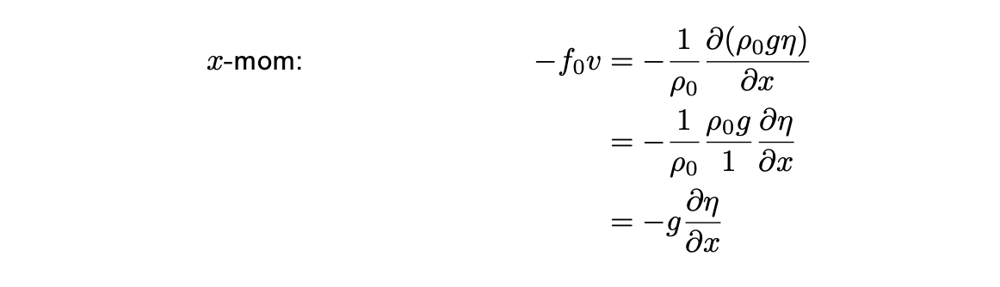
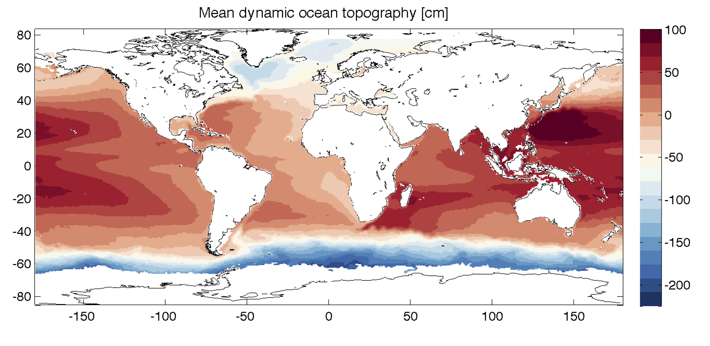

Geostrophy#
In this lecture, we will come up with a simplified version of the \(z\)-momentum equation, using scale analysis.
If you’d like to read this topic in a textbook, I recommend the text “Geophysical Fluid Dyanmics” by Benoit Cushman-Roisin and Jean Beckers. Copies should be available in the library.
\(\newcommand{\pfrac}[2]{\frac{\partial #1}{\partial #2}}\)
\(\newcommand{\sW}{\mathrm{W}}\) \(\newcommand{\sH}{\mathrm{H}}\) \(\newcommand{\sU}{\mathrm{U}}\) \(\newcommand{\sL}{\mathrm{L}}\) \(\newcommand{\sT}{\mathrm{T}}\)
Overview: Scaling analysis can be performed on the equations of motion as is, or the equations can be manipulated to eliminate dimensions, and create fundamental ratios between the magnitudes of two terms in the equation. Some of these ratios are provide important conditions on how equations can or cannot be simplified. These ratios (nondimensional numbers) are given names like ``Rossby number’’, so that they can be referred to quickly. The assumption we used for the hydrostatic approximation was that \(H\ll L\). Both \(H\) and \(L\) have dimension (units) of meters. We can nondimensionalise this by dividing both sides by \(L\) and then referring to the condition
The ratio \(H/L\) is nondimensional.
Main points of lecture:
By non-dimensionalising the equations of motion, and then applying scaling analysis, we can determine conditions under which the equations simplify to a balance between rotation and the pressure gradient force. This is called geostrophic balance and describes much of the large-scale ocean circulation.
Replacing pressure with density by using the hydrostatic approximation, we can derive the thermal wind relation between density gradients and vertical shear of horizontal velocity.
Replacing Boussinesq density (small variations) with constant density, we can derive a surface geostrophic relationship between sea surface height gradients and currents.
Nondimensional numbers#
aka. dimensionless numbers are a useful way to distill equations down to their fundamental relationships.
An important aspect of the equations we’ve seen so far (and all equations) is that the units for each term in an equation must be the same. There is no situation where you would have
What this also means is that if we compare two terms in the equation by looking at their ratio, we end up with a number that has no units. We call this a “nondimensional” number.
As an example, starting with the horizontal momentum equation,
and considering only inviscid flows (\(F_x=0\)), we can expand the equation and write the scales associated with the terms:
We can then consider how each term in the equation relates to the rotation term, with scale \(\Omega\sU\) by dividing scales through by \(\Omega\sU\). The scales of the terms are now non-dimensional:
To check that they are non-dimensional, we can see that in the first term, the units of rotation (\(\Omega\)) are 1/s and the units of the scale for time \(\sT\) are s. So these two things multipled together give s/s which is unitless. Similarly, the second term \(\sU/\Omega L\) has a numerator with units m/s and a denominator with the units of \(\Omega\) (1/s) multipled by the units of length \(\sL\) (m) or m/s. So the units of the whole term (numerator divided by denominator) are (m/s)/(m/s) or 1, unitless.
Some of these unitless numbers have special names, and in the case of the second term, we have the Rossby number:
which is the ratio between the advection term (\(u\partial u/\partial x\)) and the rotation term (\(fv\)). If this number is big (that is, if \(Ro\gg 1\)), it tells us that advection is much bigger than rotation. In terms of scaling, this would mean that
which from last time, we would have used to say “let’s throw out the rotating term” since it’s much smaller than another term in the equation.
Note: Non-dimensional numbers are useful because they do not depend on the scale or size of things. Typically when we look at flows in a rotating table, we would use non-dimensional numbers to relate the sizes we see to that of the Earth. For instance, because \(f\) is much larger on a rotating table than on the earth, the horizontal scales \(L\) are correspondingly smaller.
Alternatively, when the Rossby number (\(Ro\)) is small, rotation is important.
In the next section, we will assume that \(Ro\ll 1\) and apply this to another scaling analysis of the equations of motion.
Scaling the equations of motion for \(Ro\ll 1\): Geostrophic Balance#
We start with the momentum equations, inviscid & under the Boussinesq approximation (\(\rho=\rho_0+\rho'(x,y,z,t)\) and \(\rho'\ll\rho\)), where
Take a closer look at the Coriolis parameter (\(f\)): The part of the Earth’s rotation that the ocean typically feels is given by \(f\). (Note, this representation of rotation is already making a couple assumptions. See BCR for more information.) At the poles, the component of rotation that the water feels is the greatest. At the equator, it is essentially absent. Our expression for \(f\) is $\(f=2\Omega\sin\varphi\)\( where \)\varphi$ is latitude.
We can approximate \(f\) as as constant value for a given latitude, \(\varphi_0\), and call it the constant \(f_0\). What this means is that the motion under consideration is not large, relative to the scales over which \(f\) varies. This is called the \(f\)-plane approximation.
\(\blacklozenge\) In your reading, you can familiarise yourself with the \(\beta\)-plane approximation. The actual process behind this approximation is a Taylor series expansion for \(\sin\), and \(\beta\) is an approximation to the second term in that expansion. This is one level more complicated than the \(f\)-plane, and becomes important when we talk about large-scale things like gyres, and for Rossby waves.
Equations of motion under the \(f\)-plane approximation: Now let’s assume \(f\)-plane, still no friction (inviscid) and Boussinesq. Our \(x\)-momentum equation becomes
Scale the terms (let \([f_0]=\Omega\)) and use the advective timescale assumptions (which let us scale the full material derivative as \(\sU^2/\sL\)). Then we have
Recall: From last time (Hydrostatic), we had non-rotating (\(f=0\)), so the first and third terms balanced.
If we now assume the Rossby number is small (\(Ro=\sU/\Omega\sL\ll 1\)), then we have that the rotation term is much larger than the material derivative.
Is this a good assumption for the ocean? For a mid-latitude mesoscale eddy, the diameter is typically 100-200 km across, and the radial velocity around the edge of the eddy is up to 1 m \(\mbox{s}^{-1}\) flows,
How big is \(Ro\)? Then we can neglect the first term.
Small \(Ro\) \(\Rightarrow\) Geostrophic balance: Neglecting the first term, we are left with a balance between the Coriolis and pressure gradient terms: \begin{equation*} \boxed{ -f_0 v=-\frac{1}{\rho_0}\pfrac{p}{x}\ ,\qquad f_0u =-\frac{1}{\rho_0}\pfrac{p}{y}}\tag{Geostrophic balance} \end{equation*}
What have we done here?
We have created a fundamental relationship between pressure and velocity. In order for this to hold, we require \(Ro\) to be small (so we can drop the first \(D/Dt\) term. For this formulation, we also assumed inviscid and \(f\)-plane.
Question for thought: For a pressure gradient in the \(x\)-direction, in which direction will there be a flow?
Question for thought: We assumed that \(f_0v\gg \frac{Du}{Dt}\). When might this not be true?
Why is this totally awesome? (A few words about the RAPID project, http://www.rapid.ac.uk)
Thermal wind#
A variation on geostrophic balance using density instead of pressure, via the hydrostatic approximation.
Using the \(f\)-plane and hydrostatic approximations,
Combine these two equations by taking the \(\pfrac{}{z}(x-\mbox{mom})\) and \(\pfrac{}{x}(\)z\(-\mbox{mom})\): (Try it here\(\ldots\))
What we’ve done here is a technique we’ll be using throughout the rest of the class: applying derivatives to different equations in order to match terms and combine them.
Geostrophic balance for constant density#
Suppose that the fluid is no longer Boussinesq, but instead the density is a constant, \(\rho=\rho_0\). Using this, pressure is given by
where \(h\) is the height of the fluid. Recalling last time, the height of the fluid imparts a big pressure everywhere, but for a constant density, that pressure is the same at each level below the surface. In other words, if you consider the ocean to be a big tub of water with a flat surface, then the pressure at depth \(z\) below the surface is
with \(z\) defined as negative downwards. If on the other hand the surface of the water varies in space (\(x\) and \(y\) directions) and time (\(t\) dimension) as \(\eta(x,y,t)\), then the pressure at depth \(z\) will instead be given by $\(p(x,y,z,t) = p_{atm}-\rho_0 gz+\rho_0g\eta(x,y,t)\ .\)$
If we are interested in horizontal gradients in pressure only, then horizontal gradient of the pressure in the \(x\)-direction is
Considering that \(\rho_0\) does not vary, \(g\) does not vary (in our use of it), assume that any variations of \(p_{atm}\) (already small relative to oceanic pressures) are small, and the derivative of \(z\) with respect to \(x\) is zero (independent variables do not vary in another direction). Then we are left with
All of this is to say that the pressure that is responsible for flow (the dynamic pressure) can be given by $\(p=\rho_0 g\eta\ .\)$
Then our \(x\)-momentum equation for geostrophic balance for a constant density fluid becomes

Combined, these two equations give geostrophic balance for the shallow water equations (constant density), or in the case of varying density, geostrophic currents at the surface. \begin{equation*} \boxed{fv=g\pfrac{\eta}{x}\ ,\qquad f u=-g\pfrac{\eta}{y}}\tag{Surface geostrophy} \end{equation*}
This is actually kind of astounding. If we know the sea surface height anomalies, and density is a constant (where even though it varies, it’s kind of like a constant because \(\rho'\ll \rho_0\)), then we can determine the velocity of the geostrophic flow field.
But how big a sea surface height difference are we talking about here, to generate a typical oceanic flow?
Real world#
In the real world, we use all of these methods to determine ocean circulation. Geostrophic is extremely powerful. Sea surface height maps are used to make 2-d and time-evolving maps of how the currents at the surface of the ocean are evolving. The thermal wind relation underpins the RAPID array observations at \(26^\circ\)N which are used to measure the time-varying meridional overturning circulation.
In-class examples#
Relating pressure and velocity through geostrophy. Geostrophic balance can be adapted for sea surface height. We will use the symbol \(\eta\) or “eta” for sea surface height. In this case, the relationship between dynamic pressure \(p\) and \(\eta\) is given by \(p=\rho_0 g\eta\ .\) Then our equation for meridional (north-south) velocity in terms of zonal (east-west) pressure gradient becomes

a. Using the figure, can you estimate the average surface velocity between 20 and \(60^\circ\)N at \(50^\circ\)W? Use \(f\) at \(40^\circ\)N.
Answer: 10 cm/s
b. How about between 30 and \(60^\circ\)S at \(40^\circ\)W? (Use \(f\) at \(45^\circ\)S.)